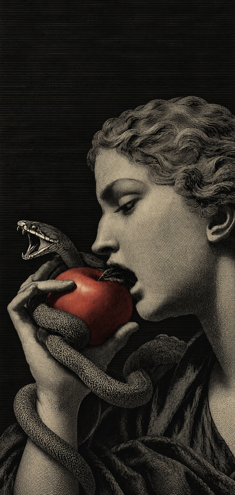
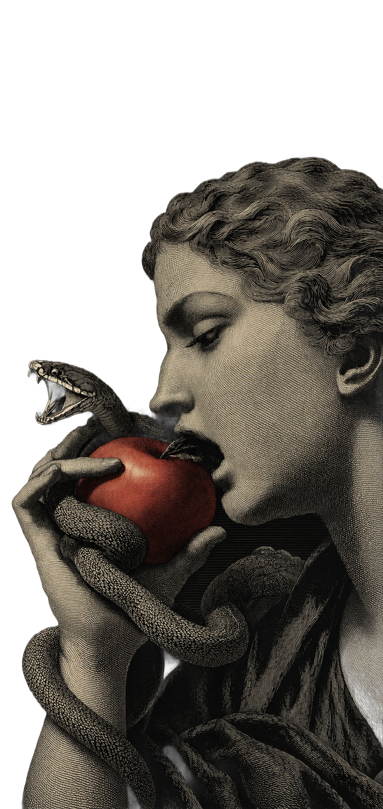

Nº 31 · OctoberThe private issue
Saturday31.10
From 20:30Rue Robert Stumper 16
Forbidden fruitBring something to drink & share
Dress codeCostume not needed,but appreciated
Private party · Invitation only
You are invited